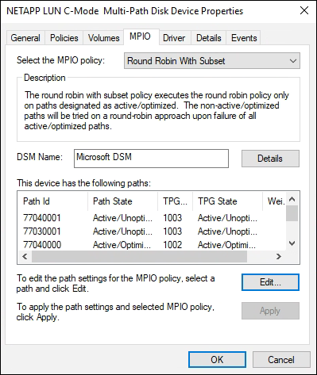

Richiedi modifiche alla documentazione
Richiedi modifiche alla documentazione Modifica questa pagina
Modifica questa pagina Scopri come collaborare
Scopri come collaborareUtilizzo di Windows Server 2012 R2 con ONTAP
Collaboratori
Avvio del sistema operativo
Sono disponibili due opzioni per l’avvio del sistema operativo: Mediante l’avvio locale o L’avvio SAN. Per l’avvio locale, installare il sistema operativo sul disco rigido locale (SSD, SATA, RAID e così via). Per l’avvio SAN, vedere le istruzioni riportate di seguito.
Avvio SAN
Se si sceglie di utilizzare l’avvio SAN, questo deve essere supportato dalla configurazione. È possibile utilizzare lo strumento matrice di interoperabilità NetApp per verificare che il sistema operativo, l’HBA, il firmware dell’HBA, il BIOS di avvio dell’HBA e la versione di ONTAP siano supportati.
-
Mappare il LUN di avvio SAN sull’host.
-
Verificare che siano disponibili più percorsi. Tenere presente che i percorsi multipli saranno disponibili solo dopo che il sistema operativo host sarà attivo e in esecuzione sui percorsi.
-
Abilitare l’avvio SAN nel BIOS del server per le porte a cui è mappato il LUN di avvio SAN. Per informazioni su come attivare il BIOS HBA, consultare la documentazione specifica del vendor.
-
Riavviare l’host per verificare che l’avvio sia stato eseguito correttamente.

|
È possibile utilizzare le impostazioni di configurazione fornite in questo documento per configurare i client cloud connessi a. "Cloud Volumes ONTAP" e. "Amazon FSX per ONTAP". |
Installazione degli hotfix di Windows
Si consiglia di utilizzare l’ultimo aggiornamento cumulativo da installare sul server.
|
|
Accedere alla "Microsoft Update Catalog 2012 R2" Sito Web per ottenere e installare gli hotfix Windows necessari per la versione di Windows in uso. |
-
Scaricare gli hotfix dal sito del supporto Microsoft.
|
|
Alcune hotfix non sono disponibili per il download diretto. In questi casi, è necessario richiedere una data correzione rapida al personale di supporto Microsoft. |
-
Seguire le istruzioni fornite da Microsoft per installare gli hotfix.

|
Molti hotfix richiedono un riavvio dell’host Windows, ma è possibile scegliere di attendere il riavvio dell’host fino a quando dopo non si installano o si aggiornano le utility host. |
Installazione delle utilità host unificate di Windows
Le utilità host unificate di Windows (WUHU) sono un insieme di programmi software con documentazione che consente di collegare computer host a dischi virtuali (LUN) su UNA SAN NetApp. Si consiglia di scaricare e installare il kit di utilità più recente. Per informazioni e istruzioni sulla configurazione DI WUHU, fare riferimento a. "Documentazione DI WUHU 7.1".
Multipathing
È necessario installare il software MPIO e impostare il multipathing se l’host Windows dispone di più percorsi per il sistema di storage. Senza il software MPIO, il sistema operativo potrebbe vedere ciascun percorso come un disco separato, con conseguente danneggiamento dei dati. Il software MPIO presenta un singolo disco al sistema operativo per tutti i percorsi e un modulo specifico del dispositivo (DSM) gestisce il failover del percorso.
Su un sistema Windows, i due componenti principali di qualsiasi soluzione MPIO sono DSM e MPIO di Windows. MPIO non è supportato per Windows XP o Windows Vista in esecuzione su una macchina virtuale Hyper-V.
|
|
Quando si seleziona il supporto MPIO, le Utilità host unificate di Windows abilitano la funzione MPIO inclusa in Windows Server 2012 R2. |
Configurazione SAN
Configurazione non ASA
Per la configurazione non ASA, devono essere presenti due gruppi di percorsi con priorità diverse.
I percorsi con priorità più elevate sono Active/Optimized, ovvero vengono serviti dal controller in cui si trova l’aggregato.
I percorsi con priorità inferiori sono attivi ma non ottimizzati perché vengono serviti da un controller diverso.
|
|
I percorsi non ottimizzati vengono utilizzati solo quando non sono disponibili percorsi ottimizzati. |
Nell’esempio seguente viene visualizzato l’output corretto per un LUN ONTAP con due percorsi attivi/ottimizzati e due percorsi attivi/non ottimizzati.

Configurazione di tutti gli array SAN
Per la configurazione di tutti gli array SAN (ASA), deve essere presente un gruppo di percorsi con priorità singole. Tutti i percorsi sono attivi/ottimizzati, ovvero vengono serviti dal controller e l’i/o viene inviato su tutti i percorsi attivi.

|
|
Non utilizzare un numero eccessivo di percorsi per una singola LUN. Non devono essere necessari più di quattro percorsi. Più di otto percorsi potrebbero causare problemi di percorso durante gli errori dello storage. |
Hyper-V VHD richiede l’allineamento per ottenere le migliori prestazioni
Se i limiti dei blocchi di dati di una partizione di disco non si allineano con i limiti dei blocchi della LUN sottostante, il sistema storage deve spesso completare due letture o scritture di blocchi per ogni lettura o scrittura di blocchi del sistema operativo. Le letture e le scritture di blocchi aggiuntive causate dal disallineamento potrebbero creare seri problemi di performance.
Il disallineamento è causato dalla posizione del settore iniziale per ciascuna partizione definita dal record di boot master.
|
|
Le partizioni create da Windows Server 2016 devono essere allineate per impostazione predefinita. |
Utilizzare Get-NaVirtualDiskAlignment Cmdlet del toolkit PowerShell di ONTAP per verificare se le partizioni sono allineate con le LUN sottostanti. Se le partizioni non sono allineate correttamente, utilizzare Repair-NaVirtualDiskAlignment Cmdlet per creare un nuovo file VHD con l’allineamento corretto. Questo cmdlet copia tutte le partizioni nel nuovo file. Il file VHD originale non viene modificato o eliminato. La macchina virtuale deve essere spenta durante la copia dei dati.
È possibile scaricare il toolkit PowerShell di ONTAP presso le community NetApp. È necessario decomprimere DataONTAP.zip nel percorso specificato dalla variabile di ambiente %PSModulePath% (oppure utilizzare il Install.ps1 script per farlo per te). Una volta completata l’installazione, utilizzare Show-NaHelp cmdlet per ottenere assistenza per i cmdlet.
PowerShell Toolkit supporta solo file VHD di dimensioni fisse con partizioni di tipo MBR. I VHD che utilizzano dischi dinamici Windows o partizioni GPT non sono supportati. Inoltre, PowerShell Toolkit richiede una partizione di dimensioni minime di 4 GB. Le partizioni più piccole non possono essere allineate correttamente.
|
|
Per le macchine virtuali Linux che utilizzano il boot loader GRUB su un VHD, è necessario aggiornare la configurazione di boot dopo aver eseguito PowerShell Toolkit. |
Reinstallare GRUB per i guest Linux dopo aver corretto l’allineamento MBR con PowerShell Toolkit
Dopo l’esecuzione mbralign Sui dischi per la correzione dell’allineamento MBR con PowerShell Toolkit sui sistemi operativi guest Linux che utilizzano GRUB boot loader, è necessario reinstallare GRUB per garantire che il sistema operativo guest venga avviato correttamente.
Il cmdlet PowerShell Toolkit è stato completato sul file VHD per la macchina virtuale. Questo argomento riguarda solo i sistemi operativi guest Linux che utilizzano il boot loader GRUB e. SystemRescueCd.
-
Montare l’immagine ISO del disco 1 dei CD di installazione per la versione corretta di Linux per la macchina virtuale.
-
Aprire la console della macchina virtuale in Hyper-V Manager.
-
Se la macchina virtuale è in esecuzione e si blocca nella schermata di GRUB, fare clic nell’area di visualizzazione per assicurarsi che sia attiva, quindi fare clic sull’icona della barra degli strumenti Ctrl-Alt-Delete per riavviare la macchina virtuale. Se la macchina virtuale non è in esecuzione, avviarla e fare immediatamente clic nell’area di visualizzazione per assicurarsi che sia attiva.
-
Non appena viene visualizzata la schermata iniziale del BIOS VMware, premere una volta il tasto Esc. Viene visualizzato il menu di avvio.
-
Dal menu di boot, selezionare CD-ROM.
-
Nella schermata di avvio di Linux, immettere:
linux rescue -
Prendere le impostazioni predefinite per Anaconda (le schermate di configurazione blu/rosse). La rete è opzionale.
-
Avviare GRUB immettendo:
grub -
Se in questa macchina virtuale è presente un solo disco virtuale o se sono presenti più dischi, ma il primo è il disco di avvio, eseguire i seguenti comandi GRUB:
root (hd0,0) setup (hd0) quit
Se nella macchina virtuale sono presenti più dischi virtuali e il disco di boot non è il primo disco, o si sta correggendo GRUB eseguendo l’avvio dal VHD di backup disallineato, immettere il seguente comando per identificare il disco di boot:
find /boot/grub/stage1
Quindi eseguire i seguenti comandi:
root (boot_disk,0) setup (boot_disk) quit
|
|
Notare che boot_disk, sopra, è un segnaposto per l’identificativo effettivo del disco di boot.
|
-
Premere Ctrl-D per disconnettersi.
Linux rescue si spegne e poi si riavvia.
Impostazioni consigliate
Nei sistemi che utilizzano FC, sono necessari i seguenti valori di timeout per gli HBA FC Emulex e QLogic quando si seleziona MPIO.
Per HBA Fibre Channel Emulex:
| Tipo di proprietà | Valore della proprietà |
|---|---|
LinkTimeOut |
1 |
NodeTimeOut |
10 |
Per gli HBA Fibre Channel QLogic:
| Tipo di proprietà | Valore della proprietà |
|---|---|
LinkDownTimeOut |
1 |
PortDownRetryCount |
10 |
|
|
Windows Unified host Utility imposta questi valori. Per informazioni dettagliate sulle impostazioni consigliate, fare riferimento a. "Guida all’installazione delle utility host di Windows 7.1". |
Limitazioni note
Non esistono problemi noti per Windows Server 2012 R2.